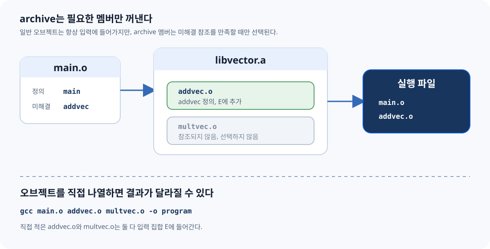
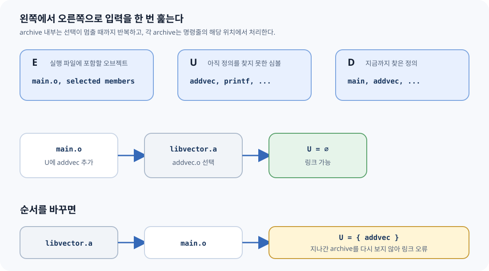
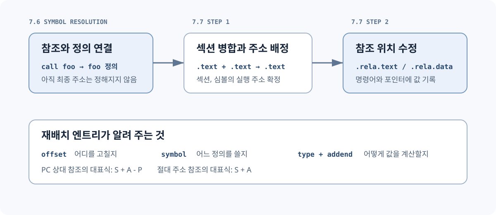
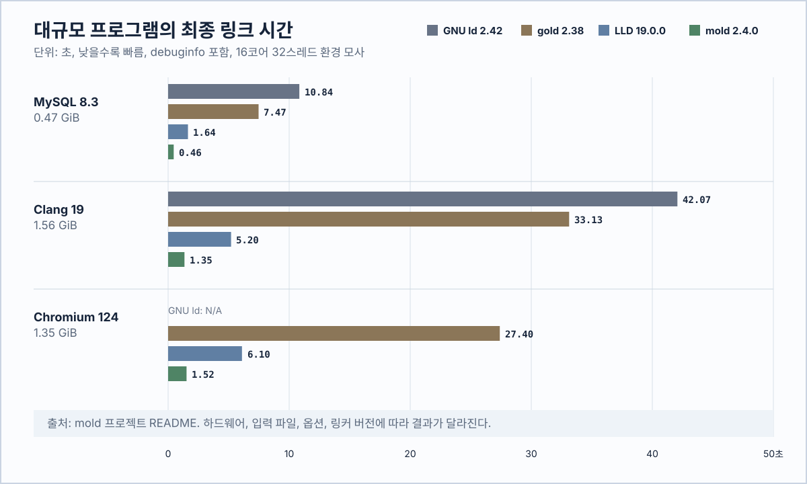
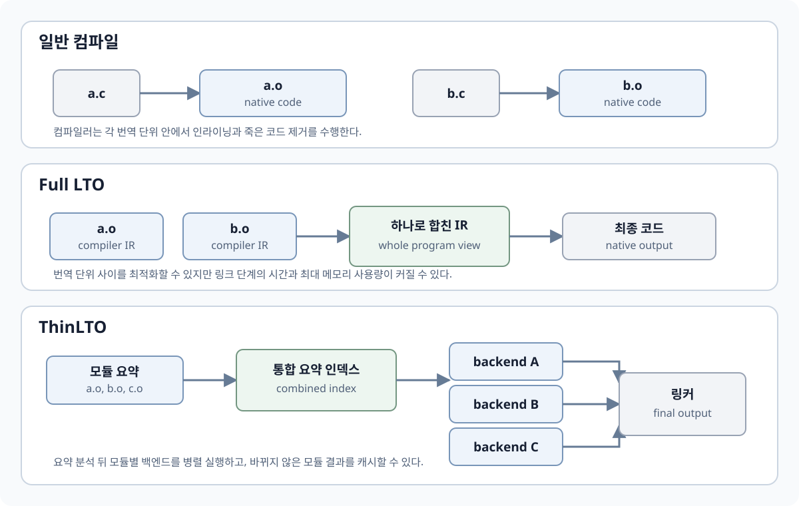
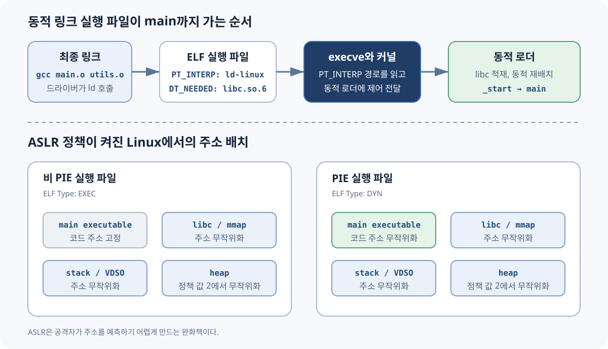

3판 7.6의 중복 이름 규칙, 정적 라이브러리, 아카이브 탐색 알고리즘을 다룬다.
00
무엇이 책이고, 무엇이 현대 보충인가
C11 초안, System V ELF ABI, GCC·Clang·GNU ld·lld 공식 문서와 정오표를 뜻한다.
교재와 현대 도구 사이의 차이, 실험 해석, 실무 안전 규칙을 명시적으로 덧붙인다.
WARNING · 2015년 책의 기본값과 2026년 도구는 다르다
책의 weak 전역 예제는 과거 GCC의 -fcommon 기본 동작을 전제로 한다.
GCC 10부터 기본값은 -fno-common이다. 따라서 책의 “조용히 합쳐진다”는
예제를 현재 GCC에서 그대로 실행하면 기본 설정에서는 링크 오류가 난다.
교재에서 현재 도구로 옮겨 읽는 기준
| 주제 | CSAPP 3판의 기준 | 현재 도구에서 확인할 것 | 변하지 않은 원리 |
|---|---|---|---|
int x; | weak로 분류하고 COMMON 병합을 설명 | GCC와 Clang의 기본 -fno-common에서는 .bss의 GLOBAL 정의 | C에서는 tentative definition |
| weak라는 말 | 초기화하지 않은 전역을 설명하는 학습 분류 | ELF binding의 STB_WEAK와 SHN_COMMON을 분리 | strong 정의가 실제 weak 정의보다 우선 |
| 중복 전역 | 과거 GCC 기본값에서 일부 조용히 병합 | 일반 코드는 extern 선언과 단일 정의를 사용 | 같은 외부 strong 정의가 둘이면 오류 |
| 타입 불일치 | 이름이 같으면 int와 double도 연결될 수 있음 | 일반 링커는 C 타입 전체를 모르며 LTO는 IR로 추가 진단 가능 | 선언을 공유 헤더 하나로 통일 |
| 정적 라이브러리 | GNU ld의 왼쪽부터의 archive 탐색 | GNU ld는 같은 규칙, LLD는 backward reference도 처리 | 이식 가능한 명령은 참조 뒤에 라이브러리 배치 |
| 링크 최적화 | 전통적인 컴파일과 링크 분리를 중심으로 설명 | section GC, Full LTO, ThinLTO를 구분 | 최종 링크는 선택된 입력 전체를 봄 |
| 링커 구현 | GNU ld 중심 | GNU ld, LLD, mold의 성능과 호환성 비교 | 심볼 해석 뒤 재배치와 최종 ELF 생성 |
교재의 심볼 해석과 재배치 알고리즘은 현재 도구에서도 기본 원리로 유지된다. 컴파일러 기본값, LTO가 전달하는 정보, archive 탐색 기능, 링커 구현과 성능은 달라졌다.
전체 근거와 조사 한계는 references.md, 전체 검증 로그는 verified-linux-aarch64.txt에 있다.
01
CSAPP 3판 7.6 대응표
| CSAPP 3e 요소 | 책의 역할 | 설명 위치 | 재현 실습 |
|---|---|---|---|
| 절 도입 | 여러 모듈의 같은 전역 이름 문제 제기 | 7.6 진입 전 복습 | 전체 |
| Strong/weak Rule 1, 2, 3 | Linux 링커 선택 규칙 | 7.6.1 strong / weak 규칙 | strong-strong, common-common, weak-weak |
foo1/bar1 | 중복 main 함수 | 7.6.1 교재 사례 1 | duplicate-function |
foo2/bar2 | 초기화된 x 중복 | 7.6.1 교재 사례 2 | strong-strong |
foo3/bar3 | strong + uninitialized global | 7.6.1 교재 사례 3 | strong-common |
foo4/bar4 | uninitialized global 둘 | 7.6.1 교재 사례 4 | common-common |
foo5/bar5 | int/double 타입 불일치와 손상 | 7.6.1 교재 사례 5 | common-mismatch |
COMMON과 .bss 설명 | 컴파일러가 결정을 링커에 미루는 이유 | 7.6.1 COMMON과 section | storage-layout |
| Practice Problem 7.2 | REF → DEF 규칙 연습 | 7.6 QUIZ | QUIZ |
| 7.6.2 | 정적 라이브러리의 필요성과 archive 구성 | 7.6.2 정적 라이브러리 | static-library |
| Figure 7.6 | libvector.a의 멤버 구성 | 7.6.2 정적 라이브러리 | ar t, nm -s |
| Figure 7.7 | main2.c가 addvec를 참조 | 7.6.2 정적 라이브러리 | static-library/main.c |
| Figure 7.8 | 필요한 archive member만 복사 | 7.6.2 정적 라이브러리 | vector-archive, vector-objects |
| 7.6.3 | E, U, D를 이용한 왼쪽부터의 탐색 | 7.6.3 아카이브 탐색 | wrong order, archive cycle |
| Practice Problem 7.3 | 라이브러리 의존 관계에 맞춘 링크 순서 | 7.6 QUIZ | archive-cycle |
02
ELI10: 컴파일러 다음에 링커가 필요한 이유
ELI10
CPU는 기계 명령을 실행한다. 컴파일러는 C 코드를 기계 명령과 데이터로 바꾼다. 여러 소스 파일은 각각 오브젝트 파일이 되며 외부 함수와 전역 변수의 주소는 미정 상태로 남는다. 링커가 오브젝트 파일을 모아 주소를 연결하고 실행 파일을 만든다.
컴파일러
각 번역 단위를 검사하고 기계 명령, 데이터, 심볼, 재배치 정보를 담은 .o를 만든다.
오브젝트 파일
외부 함수와 전역 심볼의 정의, 최종 주소, 라이브러리 선택이 남은 중간 결과다.
링커
오브젝트와 라이브러리를 모아 심볼을 연결하고 주소를 고쳐 실행 파일을 만든다.
CSAPP에서 다시 볼 곳
- 1.2: 전처리, 컴파일, 어셈블, 링크로 이어지는 전체 변환 과정
- 1.3: 컴파일 시스템을 이해해야 하는 이유
- 7.1: 컴파일러 드라이버가 각 도구를 호출하는 과정
- 7.2: 심볼 해석과 재배치로 오브젝트를 결합하는 정적 링크
- 7.3: 오브젝트 파일의 종류
03
7.6 진입 전에 복원할 내용
REMIND · 7.1–7.5 압축 복원
각 번역 단위(translation unit)는 독립적으로 컴파일되어 재배치 가능 오브젝트 (relocatable object file)가 된다. 여러 파일의 전역 이름은 링크 단계에서 처음 만난다.

링커가 하는 두 가지 일
1. 심볼 해석 (symbol resolution)
각 심볼 참조를 정확히 하나의 정의에 연결한다. 일반 오브젝트의 중복 정의를 처리하고, 필요한 정적 라이브러리 멤버를 고르는 과정까지 7.6에서 다룬다.
2. 재배치 (relocation)
심볼 해석이 끝나도 컴파일 시점의 call foo에는
foo의 최종 주소가 없다. 링커는 섹션을 합치고 주소를 배정한 뒤,
재배치 엔트리에 따라 명령어와 데이터의 참조값을 고친다.
세 종류의 링커 심볼
global definition
모듈이 정의하고 다른 모듈에서도 참조할 수 있는 비정적 함수와 전역 변수.
local definition
static으로 내부 연결을 갖는 함수·파일 범위 변수. 각 오브젝트의 local symbol 이름 공간에 속한다.external reference
현재 모듈에 정의가 없고 참조만 있는 심볼. ELF에서는 보통
SHN_UNDEF.COMMON MISTAKE · local symbol ≠ local variable
여기서 local symbol은 오브젝트 파일 안에서만 보이는 심볼이다. 함수 안 자동 지역 변수는 보통 런타임 스택이나 레지스터에 놓인다. 링커의 심볼 해석은 파일 범위 이름을 다룬다.
04
CSAPP의 strong / weak 세 규칙
CSAPP 교재는 Linux 컴파일 시스템의 중복 이름 처리를 다음 모델로 설명한다. 함수와 초기화된 전역 변수는 strong, 초기화되지 않은 전역 변수는 weak로 분류한다.
같은 이름의 강한 정의는 하나만 존재해야 한다. 함수 중복 정의도 여기에 포함된다.
strong 하나와 weak 여러 개가 있으면 strong 정의가 모든 참조를 만족한다.
weak만 여러 개면 어느 하나를 고른다. 어떤 것을 고를지 프로그램이 가정하면 안 된다.

WARNING · arbitrary의 의미
arbitrary는 소스 언어 수준에서 이식 가능한 선택을 보장하지 않음을 뜻한다. 특정 링커 버전과 입력 순서에서는 같은 결과가 반복될 수 있다.
05
CSAPP 7.6.1의 다섯 사례
사례 1 · main 함수가 두 개
두 모듈 모두 main 함수를 정의한다. 함수 정의는 strong이므로 Rule 1에 따라
링크 오류다.
duplicate-functionOBSERVED · GNU ld
multiple definition of `helper';
df-main.o: first defined here
collect2: error: ld returned 1 exit status사례 2 · 초기화된 전역 x가 두 개
두 모듈이 모두 int x = 15213; 같은 초기화된 전역을 정의한다. 둘 다
strong이므로 함수 중복과 같은 링크 오류가 발생한다. 외부 연결을 가진 저장 객체의
정의는 하나여야 한다.
사례 3 · 초기화된 x + 초기화되지 않은 x
과거 기본값 또는 -fcommon에서는 첫 모듈의 초기화된 x가
strong, 다른 모듈의 int x;가 COMMON 후보가 된다. strong 정의가 선택되고,
다른 모듈의 함수도 그 같은 저장 공간을 쓴다. 책의 결과처럼 update()가
호출자 모르게 값을 바꿀 수 있다.
strong-commonOBSERVED
$ nm -S sc-main.o sc-worker.o | grep ' x$'
0000000000000000 0000000000000004 D x
0000000000000004 0000000000000004 C x
$ ./strong-common
x = 15212사례 4 · 초기화되지 않은 x가 두 개
-fcommon에서는 두 tentative definition이 COMMON으로 나온다. GNU ld는
하나의 저장 공간으로 병합하며, --warn-common을 주면 이 조용한 병합을
경고로 드러낼 수 있다. 현대 기본 -fno-common에서는 둘 다
.bss 정의이므로 오류다.
common-commonOBSERVED · -fcommon
$ gcc -Wl,--warn-common cc-main.o cc-worker.o -o common-common
ld: cc-worker.o and cc-main.o: warning: multiple common of `x'
$ ./common-common
x = 15212사례 5 · 이름은 같고 타입은 다르다
한 모듈은 int x, 다른 모듈은 double x라고 믿는다. 링커는 심볼
이름과 오브젝트 메타데이터를 주된 해석 키로 사용한다. -fcommon에서
strong int가 선택되면, 다른 모듈은 같은 주소에 8바이트 double을
쓸 수 있다. 인접 객체가 덮일 수 있는 심각한 버그다.
일반 ELF 링커는 STT_OBJECT, STT_FUNC,
st_size 같은 오브젝트 메타데이터를 사용한다.
int, double, 함수 매개변수, 구조체 레이아웃 같은
C 타입 검사는 컴파일러와 LTO의 역할이다. 강의의 “링커는 타입을 모른다”는
이 역할 구분을 가리킨다.
WARNING · 출력 값은 시스템 의존
책의 x86-64 예시는 x와 바로 다음 y가 함께 손상되는 한 배치를
보여 준다. CSAPP 공식 정오표는 정확한 손상 값이 시스템 의존이라고 명시한다.
본 aarch64 실험에서는 x=0, y=15212가 관측됐다.
이 값들은 정의되지 않은 동작에서 나온 관측값이다.
common-mismatchOBSERVED · aarch64
ld: warning: common of `x' overridden by definition
ld: warning: alignment 4 of normal symbol `x' is smaller than 8
ld: warning: alignment discrepancies can cause real problems
$ ./common-mismatch
x = 0x0 y = 0x3b6c
06
교재의 weak와 ELF의 WEAK 구분
OFFICIAL · ELF ABI
ELF 심볼 표의 Bind에는 LOCAL, GLOBAL,
WEAK가 있다. SHN_COMMON은 특별한 section index다.
GOTCHA ·
-fcommon의 ELF 표기
GCC -fcommon에서 파일 범위 int x;를 컴파일하면 대개
OBJECT GLOBAL DEFAULT COM x가 나온다.
Bind=GLOBAL, Ndx=COM이다.
| C 표기 | 교재 모델 | 현대 GCC ELF 관측 | nm |
중복 시 |
|---|---|---|---|---|
int f(void) {…} |
strong | FUNC GLOBAL .text |
T |
두 정의면 오류 |
int x = 7; |
strong | OBJECT GLOBAL .data |
D |
두 정의면 오류 |
int x = 0; |
strong | OBJECT GLOBAL .bss |
B |
두 정의면 오류 |
int x; + -fcommon |
weak | OBJECT GLOBAL COM |
C |
COMMON 병합 가능 |
int x; + -fno-common |
책 이후 기본값 | OBJECT GLOBAL .bss |
B |
여러 번역 단위면 오류 |
__attribute__((weak)) |
명시적 weak | OBJECT WEAK .data |
V |
GLOBAL 정의가 우선 |

실제 출력으로 확인
GCC 13.3 · -fcommonOBSERVED
$ readelf -Ws sc-worker.o | grep ' x$'
16: 0000000000000004 4 OBJECT GLOBAL DEFAULT COM x
$ nm -S sc-worker.o
0000000000000004 0000000000000004 C x명시적 ELF weak attributeOBSERVED
$ readelf -Ws ew-provider.o | grep ' hook$'
17: 0000000000000000 4 OBJECT WEAK DEFAULT 3 hook
$ nm -S ew-provider.o
0000000000000000 0000000000000004 V hook
07
tentative definition, COMMON, .bss, .data
OFFICIAL · C11 §6.9.2 파일 범위 객체 선언에 initializer가 없고 적절한 storage-class 조건을 만족하면 tentative definition(잠정 정의)이다. 같은 번역 단위 안에 실제 외부 정의가 끝까지 없다면 0 initializer를 가진 정의처럼 동작한다.
NOTE · C 언어 규칙과 ELF 배치는 다르다
C 표준은 “프로그램 시작 시 0으로 초기화된 객체”라는 의미를 규정한다.
그것을 오브젝트 파일에서 COMMON으로 낼지 .bss로 낼지는 컴파일러와
플랫폼의 구현 선택이다.

SHN_COMMON을 사용한다.| 표현 | 정의/선언 | -fcommon 입력 .o |
-fno-common 입력 .o |
최종 메모리 |
|---|---|---|---|---|
int a = 7; |
외부 정의 | .data |
.data |
쓰기 가능한 초기화 데이터 |
int b = 0; |
외부 정의 | .bss |
.bss |
0으로 초기화 |
int c; |
tentative definition | SHN_COMMON |
.bss |
최종적으로 보통 .bss |
extern int d; |
선언/참조 | SHN_UNDEF |
SHN_UNDEF |
다른 정의가 제공해야 함 |
static int e; |
내부 연결 tentative | .bss LOCAL |
.bss LOCAL |
모듈 전용 0 초기화 객체 |
COMMON MISTAKE ·
SHN_COMMON 필드 읽기
ELF SHN_COMMON 심볼은 입력 섹션 배정 전 상태다.
st_value는 정렬 조건, st_size는 필요한 바이트 수다.
GNU ld 스크립트의 *(COMMON)은 이런 심볼을 출력
.bss에 배치하는 특별 표기다.
08
GCC 10: 실수를 허용하던 기본값을 뒤집다
OFFICIAL · GCC 10 PORTING GUIDE
2020-05-07에 공개된 GCC 10.1부터 C의 기본값이 -fno-common으로
바뀌었다. 헤더에 int x;를 써 여러 파일에서 정의를 만들어 버리는
실수를 링크 오류로 드러내고, 일부 target에서는 더 효율적인 전역 접근도 가능하게
한다.

기본값이 바뀌기 전에도 -fno-common을 쓴 프로젝트가 있었다
GCC 9까지 기본값은 -fcommon이었다. Linux 2.6.12의 2005년
Makefile은 전역 CFLAGS에 -fno-common을 명시했다. 일부 프로젝트는
중복 tentative definition을 일찍 발견하고 전역 배치를 명확히 하기 위해 컴파일러
기본값을 직접 설정했다. GCC 10 전환 과정에서는 기본값에 의존하던 프로젝트들이
중복 정의를 수정했다.
GOTCHA ·
-fcommon이 만드는 심볼
-fcommon의 int x;는 보통
STB_GLOBAL + SHN_COMMON이다. -fno-common의 같은
소스는 보통 STB_GLOBAL + .bss다. 교재 모델에서는 앞을 weak,
뒤를 strong처럼 분류할 수 있지만, ELF symbol table의 Bind 값은
둘 다 GLOBAL이다. 실제 STB_WEAK는 별도의 속성이나
오브젝트 도구로 만든다.
과거 의미 재현
-fcommonPASS
gcc -fcommon -c main.c worker.c
gcc main.o worker.o -o before
./before
x = 15212현대 기본 의미 재현
-fno-commonEXPECTED ERROR
gcc -fno-common -c main.c worker.c
gcc main.o worker.o -o after
multiple definition of `x'Clang 18에서도 플래그의 의미는 같다
Clang 18.1.3 + lld 18.1.3OBSERVED
$ clang -c main.c worker.c
# 기본 출력: x는 각 .o의 .bss GLOBAL 정의 → duplicate symbol 오류
$ clang -fcommon -c main.c worker.c
# x는 GLOBAL COM → 링크 성공, x = 15212
$ clang -fno-common -c main.c worker.c
# x는 각 .o의 .bss GLOBAL 정의 → duplicate symbol 오류고치는 방법
전역 변수의 단일 정의 패턴RECOMMENDED
/* state.h: 외부 정의를 가리키는 선언 */
extern int x;
/* state.c: 프로그램 전체에서 정확히 하나인 정의 */
int x = 0;
/* user.c: 헤더를 통해 같은 객체를 참조 */
#include "state.h"COMMON MISTAKE ·
-fcommon을 호환 옵션으로만 사용
-fcommon은 레거시 이행 기간의 호환 옵션으로 사용할 수 있다.
최종 구조는 헤더의 extern 선언과 한 구현 파일의 정의로 구성한다.
09
실험실: nm, readelf, objdump로 증거 읽기
아래 출력은 verify-elf.sh를
Ubuntu 24.04 aarch64 컨테이너에서 실행한 결과다. macOS의 gcc는 Apple
Clang이며 Mach-O를 만들기 때문에, ELF 설명과 섞지 않았다.
nm 한 글자 해독표
D / d
초기화된 data. 대문자는 보통 global, 소문자는 local.
B / b
BSS의 0 초기화·미초기화 데이터.
C
아직 할당되지 않은 common symbol.
T / t
text 영역의 함수·코드.
U
현재 오브젝트에는 정의가 없는 참조.
V / W
실제 weak object / weak non-object.
같은 소스, 다른 section index
storage-layout/symbols.cOBSERVED
$ nm -S layout-common.o
0000000000000000 0000000000000004 D initialized
0000000000000004 0000000000000004 C tentative
0000000000000000 0000000000000004 B zero
$ nm -S layout-nocommon.o
0000000000000000 0000000000000004 D initialized
0000000000000000 0000000000000004 B tentative
0000000000000004 0000000000000004 B zerostatic은 이름을 파일 안에 가둔다
static-internalOBSERVED
$ ./static-internal
main.x=11 other.x=22
$ nm -a static-internal | grep ' [bd] x$'
0000000000020010 d x
0000000000020014 d x
소문자 d는 두 x가 각각 local data symbol임을 보인다.
각 심볼은 해당 오브젝트의 내부 연결 이름 공간에 속한다.
직접 재현
macOS에서도 ELF를 똑같이 재현DOCKER
cd chapter07
./verify-in-docker.sh
# HTML과 Markdown의 로컬 링크·필수 블록 검사
node verify-html.mjsNOTE · 재현 환경
.o는 CPU, 운영체제, 컴파일러에 따라 달라진다.
저장소는 소스, 재생성 명령, 검증 결과를 추적하며
examples/build/는 재생성 가능한 출력 디렉터리로 둔다.
10
7.6.1 보충: GNU ld와 lld 진단
GNU ld 2.42
strong + strongERROR
multiple definition of `conflict';
ss-main.o: first defined herelld 18.1.3
strong + strongERROR
duplicate symbol: conflict
>>> defined at main.c:3
>>> defined at other.c:1둘 다 기본적으로 중복 strong 정의를 거부한다. lld는 각 정의의 소스 위치를 구조적으로 보여 줬고, GNU ld는 “first defined here” 형태로 보여 줬다.
실제 WEAK + WEAK 입력 순서 실험
GNU ld와 lld에서 같은 관측OBSERVED, NOT GUARANTEED
$ cc main.o left.o right.o -o left-first && ./left-first
choice=11
$ cc main.o right.o left.o -o right-first && ./right-first
choice=22
$ clang -fuse-ld=lld main.o left.o right.o -o lld-left && ./lld-left
choice=11
$ clang -fuse-ld=lld main.o right.o left.o -o lld-right && ./lld-right
choice=22WARNING · weak + weak의 계약 범위
이 버전의 두 링커는 먼저 입력된 weak 정의를 골랐다. ELF ABI는 weak 동작의 일부를 implementation-defined로 두며, 교재도 “어느 weak든”이라고 표현한다. 기능 선택에는 명시적 strong 정의나 등록 메커니즘을 사용한다.
escape hatch: --allow-multiple-definition
GNU ld와 lld 공식 문서는 이 옵션에서 첫 정의를 사용한다고 설명한다. 적용 범위는 바이너리 분석과 의도적으로 중복 정의를 사용하는 특수 빌드다.
11
7.6.1 보충: ELF와 C의 경계
1. 같은 번역 단위 안의 잠정 정의는 하나로 정리된다
C11 §6.9.2에 따르면 같은 번역 단위 안의 int x;가 여러 번 나와도,
호환되는 선언이라면 번역 단위 끝에서 하나의 0 초기화 정의처럼 동작한다.
이 처리는 오브젝트 파일 생성 전에 완료된다. initializer가 붙은
extern int x = 3;은 정의다.
C11 규칙N1570 §6.9.2
int x; /* tentative definition */
int x; /* 같은 번역 단위: 같은 객체 */
extern int y = 3; /* initializer가 있으므로 definition */
int a[]; /* 끝까지 불완전하면 0인 원소 하나의 배열 */2. 크기가 다른 COMMON은 가장 큰 저장 공간을 택한다
GNU ld는 같은 이름의 COMMON들이 크기가 다르면 가장 큰 크기를 사용한다.
ELF .comm은 크기와 정렬 조건을 전달한다. 링커는 바이트 수와
정렬 조건을 병합한다. C 타입 일치는 공유 헤더와 컴파일러 진단으로 확인한다.
common-sizeOBSERVED · GNU ld 2.42
$ nm -S cs-small.o cs-large.o | grep ' arena$'
0000000000000004 0000000000000004 C arena
0000000000000020 0000000000000020 C arena
$ gcc -Wl,--warn-common cs-main.o cs-small.o cs-large.o -o common-size
ld: warning: common of `arena' overriding smaller common
$ nm -S common-size | grep ' arena$'
0000000000020018 0000000000000020 B arena3. 정의되지 않은 실제 ELF weak는 0으로 남을 수 있다
System V ELF ABI에서 해결되지 않은 STB_WEAK 참조의 값은 0이다.
정적 라이브러리의 멤버 선택 기준은 일반 undefined 참조이며 undefined weak는
선택 기준에서 빠진다. 선택적 hook은 함수 포인터의 0 값을 검사한 뒤 호출한다.
-fno-common이 기본이어도 실제 ELF weak는 그대로 쓸 수 있다. GCC와
Clang에서 가장 직접적인 소스 표현은 __attribute__((weak))다.
생성 방법에는 weakref, #pragma weak, 어셈블러의
.weak, objcopy --weaken도 있다.
기본 구현을 strong 정의로 교체
default.c / override.cweak function
/* default.c */
int foo(void) __attribute__((weak));
int foo(void) { return 1; }
/* override.c */
int foo(void) { return 2; }weak-functionOBSERVED
$ readelf -Ws wf-default.o | grep ' foo$'
FUNC WEAK DEFAULT ... foo
$ ./weak-function-default
foo() = 1
$ ./weak-function-override
foo() = 2
두 구현에 모두 weak를 붙이면 링크 입력 순서에 따라 하나가 관측될
수 있지만, 어느 정의가 선택되는지는 프로그램 계약으로 삼으면 안 된다. 기본
구현 하나를 weak로 두고 사용자 구현을 strong으로 제공하는 편이 의도가 분명하다.
weak-undefinedOBSERVED
$ gcc wu-main.o liboptional.a -o weak-archive
$ nm weak-archive | grep optional_hook
w optional_hook
$ ./weak-archive
optional_hook: absent
$ gcc wu-main.o wu-provider.o -o weak-explicit && ./weak-explicit
optional_hook: present선택적 의존성을 다루는 층이 다르다
optional hookELF C
extern void profiler_init(void) __attribute__((weak));
int main(void)
{
if (profiler_init != 0) {
profiler_init();
}
}ELF C는 정의되지 않은 weak 참조의 0 값을 호출 전에 검사한다. 다른 언어는 런타임의 모듈 또는 클래스 로더에서 선택적 의존성의 부재를 처리한다.
| 환경 | 의존성이 없을 때 확인하는 방식 |
|---|---|
| ELF C | undefined weak의 주소가 0인지 검사 |
| Node.js / npm | optionalDependencies 설치 실패를 허용하고 애플리케이션이 require 실패를 처리 |
| Python | import가 ModuleNotFoundError를 내면 필요한 범위에서 처리 |
| Ruby | require의 LoadError를 필요한 범위에서 처리 |
| Java | Class.forName의 ClassNotFoundException 처리 |
| C# / .NET | Assembly.Load의 FileNotFoundException 또는 AssemblyLoadContext의 실패 처리 |
각 환경은 자체 런타임과 로더로 선택적 의존성을 구현한다. 의존성이 있으면 추가 기능을 활성화한다.
4. 일반 링커와 LTO가 아는 타입 정보는 다르다
일반 정적 링커는 심볼 이름, binding, STT_OBJECT·STT_FUNC,
크기, 섹션, 가시성을 본다. C의 int, double, 함수 원형,
구조체 필드 정보는 컴파일러와 LTO가 다룬다. GCC의
link-time optimization(LTO)은 중간 표현(IR)을 함께 보므로
-Wlto-type-mismatch 진단을 낼 수 있다. 이 경고는
-flto가 있을 때 가능하다. 선언은 한 헤더로 통일하고 정의는
하나만 둔다.
common-mismatch + -fltoOBSERVED · GCC 13.3
worker.c:1:8: warning: type of 'x' does not match original declaration
main.c:4:5: note: type 'int' should match type 'double'
main.c:4:5: note: code may be misoptimized적용 범위
이 결정 트리는 C 재배치 가능 오브젝트의 정적 링크를 설명한다. C++의 ODR·COMDAT, JVM의 constant pool 기반 method resolution, shared object의 동적 심볼 검색은 별도 규칙을 따른다.
GOTCHA · 언어 런타임별 심볼 해석
현재 ELF 계열 C++ ABI의 mangled name은 보통 _Z로 시작한다.
JVM은 class file의 이름과 descriptor로 symbolic reference를 해석한다.
두 환경은 각자의 ABI와 런타임 규칙을 사용한다.
12
7.6.2 정적 라이브러리
정적 라이브러리(static library)는 여러 재배치 가능 오브젝트를
묶은 아카이브(archive)다. Unix 계열에서는
보통 .a 확장자를 쓴다. 링커는 현재 해결하지 못한 심볼을 정의하는
아카이브 멤버만 꺼낸다.
왜 오브젝트를 아카이브로 묶는가
라이브러리는 컴파일러와 별도로 배포한다. 아카이브는 함수를 여러
.o 멤버로 나누고 하나의 파일과 심볼 인덱스로 관리한다.
libvector.a 만들기ar / nm
$ gcc -c addvec.c multvec.c
$ ar rcs libvector.a addvec.o multvec.o
$ ar t libvector.a
addvec.o
multvec.o
$ nm -s libvector.a
ar rcs의 r은 멤버 추가 또는 교체, c는
아카이브 생성, s는 심볼 인덱스 생성이다. 일부 환경에서는
ranlib libvector.a로 인덱스를 별도로 갱신한다.

라이브러리 지정direct path / -l
$ gcc main.o ./libvector.a -o prog
$ gcc main.o -L. -lvector -o prog
-L.은 라이브러리를 찾을 디렉터리를 추가하고,
-lvector는 플랫폼 규칙에 따라 libvector.so 또는
libvector.a를 찾는다. Linux의 일반 링크에서는 공유 라이브러리를
먼저 고를 수 있다. 정적 링크만 원하면 -static을 사용하거나
.a 경로를 직접 지정한다.
GOTCHA · archive 입력과 오브젝트 입력
gcc main.o libvector.a는 참조된 멤버만 선택한다.
gcc main.o addvec.o multvec.o는 두 오브젝트를 모두 일반 입력으로
넣는다. 실험에서 archive 결과에는 multvec가 없었지만, 명시적
오브젝트 결과에는 multvec도 남았다.
main.o와 utils.o가 foo만 사용하면
libvector.a에서는 선택되는 멤버가 없다.
13
7.6.2 보충: 컴파일러 드라이버와 libc
gcc, clang, cc는 명령줄에서 전처리,
컴파일, 어셈블, 링크 단계를 조정하는
컴파일러 드라이버(compiler driver)다. 옵션에 따라 한 단계에서
멈추거나 다음 도구를 호출한다.
| 명령 또는 구성 요소 | 역할 | 확인 방법 |
|---|---|---|
gcc, clang, cc | 전체 빌드 단계를 조정하는 드라이버 | gcc -###, clang -### |
cc1 | GCC의 C 컴파일러 본체. 내부 프로그램이므로 보통 직접 호출하지 않음 | gcc -print-prog-name=cc1 |
cpp | 독립 실행 가능한 C 전처리기. 현재 GCC는 기본적으로 전처리를 통합 실행 | gcc -E file.c |
as | 어셈블리 코드를 .o로 만드는 어셈블러 | gcc -c file.s |
ld, ld.lld | 오브젝트와 라이브러리를 결합하는 정적 링커 | gcc -fuse-ld=lld ... |
ldd | 실행 파일이 요구하는 동적 의존성을 표시 | ldd a.out |
#include, #define, 조건부 컴파일을 처리하는 단계는
전처리다. GCC 드라이버는 설치된 전처리기, 컴파일러, 어셈블러, 링커, 라이브러리
파일을 찾아 조합한다.
단계별 실행GCC driver
$ gcc -E main.c -o main.i # 전처리까지만
$ gcc -S main.i -o main.s # C를 어셈블리로
$ gcc -c main.s -o main.o # 어셈블해 오브젝트 생성
$ gcc main.o utils.o -o app # 링크
마지막 명령은 링크 단계다. gcc 드라이버는 링커를 호출하면서 시작
코드 crt*.o, 기본 라이브러리, 동적 로더 경로 같은 인수를 함께
전달한다. 다음 raw ld 명령에는 오브젝트 두 개만 들어간다.
driver와 raw ldOBSERVED · Ubuntu 24.04
$ gcc main.o utils.o -o driver-gcc
$ printf '4\n' | ./driver-gcc
output is 64
$ ld main.o utils.o -o driver-raw-ld
ld: warning: cannot find entry symbol _start
ld: undefined reference to `__isoc99_scanf'
ld: undefined reference to `printf'
raw ld 명령은 시작 코드와 libc 입력이 빠져 실패한다. GCC가 넘기는
전체 인수는
gcc -### main.o utils.o로 확인할 수 있다.
GCC와 C 표준 라이브러리를 구분한다
GCC와 C 표준 라이브러리는 별도 프로젝트다. Linux 배포판에서는 GCC와 glibc가
함께 설치되는 경우가 많다. 헤더는 함수와 타입을 선언하고, 실제 구현은 정적
아카이브나 공유 오브젝트에 있다. 위치는
/usr/include, /usr/lib로 고정되지 않으며 sysroot,
multiarch 디렉터리, SDK 구성에 따라 달라진다.
| 환경 | C 런타임 연결 |
|---|---|
| glibc | libc.so.6을 쓰는 동적 링크와 libc.a를 쓰는 정적 링크를 모두 지원. 정적 패키지가 설치되어 있어야 함 |
| musl | 동적 링크와 정적 링크를 모두 지원. 외부 런타임 의존성이 없는 Linux 실행 파일을 만들 때 자주 사용 |
| macOS | 정적 라이브러리 지원. 시스템 libc까지 포함한 완전 정적 서드파티 실행 파일은 지원하지 않음 |
| MSVC | /MD는 DLL CRT, /MT는 정적 CRT. Visual C++ Redistributable은 주로 /MD 실행 파일에 필요한 런타임 DLL을 배포 |
glibc는 동적 링크와 정적 링크를 모두 지원한다. 다음 Ubuntu 실험에서는
gcc -static이 libc.a를 사용해 정적 실행 파일을 만들었다.
glibc static linkOBSERVED
$ gcc -static main.o utils.o -o driver-static
$ file driver-static
ELF 64-bit LSB executable, ARM aarch64, statically linked
$ ldd driver-static
not a dynamic executableglibc 정적 링크는 NSS, locale, 동적 모듈을 사용하는 기능에서 추가 제약이 생길 수 있다. 배포 대상의 glibc 호환성이 중요하면 가장 오래된 지원 환경에서 빌드하는 방식도 쓴다. musl은 정적 배포를 위한 선택지 중 하나다.
14
7.6.3 정적 라이브러리 탐색
GNU ld의 기본 모델에서는 입력을 왼쪽에서 오른쪽으로 한 번 훑는다. 이때 세 집합을 유지한다고 생각하면 된다.
| 집합 | 의미 |
|---|---|
E | 실행 파일에 포함하기로 선택한 오브젝트 |
U | 아직 정의를 찾지 못한 심볼 참조 |
D | 지금까지 찾은 심볼 정의 |
- 일반
.o를 만나면 항상E에 넣고, 참조와 정의로U,D를 갱신한다. .a를 만나면 현재U를 만족하는 멤버를 고른다. 해당 아카이브 안에서 더 이상 변화가 없을 때까지 반복한다.- 선택되지 않은 아카이브 멤버는 버린다.
- 모든 입력을 본 뒤
U가 비어 있지 않으면 링크 오류다.

입력 순서
GNU ldOBSERVED
$ gcc main.o libvector.a -o ok
$ gcc libvector.a main.o -o fail
ld: undefined reference to `addvec'
첫 명령에서는 main.o가 addvec를 U에
넣은 다음 libvector.a를 만난다. 둘째 명령에서는 아카이브를 볼 때
U가 비어 있어 선택되는 멤버가 없다. GNU ld는 아카이브를 명령줄의
해당 위치에서 처리하므로 뒤의 main.o가 추가한
addvec 참조는 해결되지 않은 상태로 남는다.
참조를 만드는 입력을 먼저, 정의를 제공하는 라이브러리를 뒤에 둔다. 라이브러리
A가 B를 사용한다면 보통 -lA -lB로 쓴다.
순환 의존성
archive repeat / groupGNU ld
$ gcc main.o libx.a liby.a libx.a -o repeat
$ gcc main.o -Wl,--start-group libx.a liby.a -Wl,--end-group -o grouped첫 명령은 필요한 아카이브를 반복한다. 둘째 명령은 GNU ld가 그룹 안의 아카이브를 해결되지 않은 참조가 더 이상 줄지 않을 때까지 반복해서 탐색하게 한다. 그룹 탐색은 비용이 더 들 수 있으므로 순환 의존성이 있는 범위에만 쓴다.
LLD의 차이
LLD는 앞에서 읽은 아카이브의 심볼 표를 기억한다. 그래서 GNU ld에서 실패하는
libvector.a main.o 순서도 LLD에서는 뒤늦게 필요한 멤버를 꺼내
성공할 수 있다.
LLD backward referenceOBSERVED · LLD 18.1
$ clang -fuse-ld=lld libvector.a main.o -o lld-ok
$ clang -fuse-ld=lld -Wl,--warn-backrefs libvector.a main.o -o lld-check
ld.lld: warning: backward reference detected:
addvec in main.o refers to libvector.a(addvec.o)
--warn-backrefs는 이 역방향 참조를 경고한다. GNU ld를 포함한
다른 링커와 호환되는 명령줄을 유지하려면 LLD에서 성공하더라도 오브젝트와
라이브러리 순서를 바로잡는다.
QUIZ
gcc p.o libx.a liby.a에서 p.o가 x,
libx.a의 선택된 멤버가 y,
liby.a의 선택된 멤버가 다시 x_helper를 요구한다고
하자. x_helper가 libx.a의 다른 멤버에만 있으면 왜
실패하는가?
정답
libx.a를 처리할 때는 x_helper가 아직
U에 없었다. liby.a를 처리한 뒤 필요해진다.
libx.a를 다시 적거나 두 아카이브를 그룹으로 묶으면 다음
탐색에서 정의를 찾는다.
15
QUIZ
QUIZ
-
int x = 0;은 초기값이 0이므로 weak인가?정답 보기
교재 모델에서 initializer가 있는 전역 정의는 strong이다. ELF에서는 보통GLOBAL객체로.bss에 놓인다. -
readelf의GLOBAL DEFAULT COM은 ELF weak symbol인가?정답 보기
binding은GLOBAL, section index는SHN_COMMON이다. 실제 weak binding은WEAK로 표시된다. -
두 파일의
static int x;는 어떻게 분리되는가?정답 보기
static파일 범위 객체는 내부 연결을 가진다. 각 오브젝트의 local symbol이라 서로 다른 이름 공간에 있다. -
GCC 10 이후 여러 파일의
int x;가 기본 설정에서 실패하는 이유는?정답 보기
기본-fno-common이 각 tentative definition을 오브젝트의.bssGLOBAL 정의로 내므로, 링커가 여러 strong 정의로 보고 거부한다.
Practice Problem 7.2 대응
A. 함수 main + tentative object main
함수 정의가 strong, tentative object가 weak/common인 과거 모델에서는 두 참조 모두 함수 정의 쪽에 연결된다. 함수와 객체가 같은 이름을 공유하므로 C 타입 관점에서 안전하지 않은 설계다.
B. 함수 main + 초기화된 object main
둘 다 strong이므로 Rule 1 링크 오류다.
C. tentative int x + initialized double x
과거 모델에서는 initialized
double strong 정의가 선택되어 두 참조가 그 정의로 해석된다. C 타입 관점에서는 위험한 불일치다. 현대 -fno-common 기본에서는 두 정의로 오류가 난다.EXERCISE
examples/storage-layout/symbols.c에static int s;와int z = 0;을 추가하고readelf -Ws의 Bind/Ndx를 예측한 뒤 확인한다.common-common의 두x를 각각char x[4],char x[32]로 바꾸고-fcommon -Wl,--warn-common에서 GNU ld가 어떤 크기를 택하는지 확인한다.explicit-weak의 strong 정의를 제거하고 weak 정의만 남긴 뒤nm과 실행 결과를 비교한다.- 헤더에
int counter;를 둔 잘못된 3파일 프로그램을 만들고,extern+ 단일 정의 패턴으로 고친다.
추가 확인
컴파일 오류와 링크 오류의 차이는?
각 번역 단위의 문법과 타입은 컴파일러가 검사한다. 번역 단위 사이의 정의는 링커가 연결한다.
.bss가 파일 크기를 줄이는 이유는?
0 바이트를 파일에 모두 저장하지 않고 크기만 기록한 뒤 로더가 메모리를 0으로 채운다.
weak symbol은 언제 쓰는가?
기본 구현이나 선택적 hook에 쓴다. 기능 선택은 명시적 strong 정의나 등록 메커니즘으로 구성한다.
헤더에는 왜 extern을 쓰는가?
헤더에는 하나의 외부 정의를 가리키는 extern 선언을 둔다. 여러 번역 단위가 같은 선언을 공유할 수 있다.
16
용어 사전: 영문을 기준으로 고정하기
symbol resolution
심볼 해석. 각 심볼 참조를 하나의 정의에 연결하는 링크 단계.
duplicate symbol name
중복 심볼 이름. 여러 입력 모듈이 같은 외부 이름을 정의한 상태.
strong symbol
강한 심볼. CSAPP 모델에서 함수와 초기화된 전역. 같은 이름의 strong은 하나만 허용.
weak symbol
약한 심볼. 문맥을 밝혀야 한다. CSAPP 학습 모델인지 ELF
STB_WEAK인지 구분한다.undefined weak symbol
정의가 없는 실제 ELF weak 참조. ELF에서는 링크 오류 없이 0 값으로 남을 수 있으므로 호출하거나 역참조하기 전에 주소를 검사한다.
optional dependency
선택적 의존성. 기본 동작과 분리된 추가 기능을 제공하는 의존성. ELF weak hook과 런타임 모듈 로딩은 각각의 실행 환경에 맞는 구현을 사용한다.
tentative definition
잠정 정의. 파일 범위에서 initializer 없이 나온 객체 선언의 C 표준 개념.
common symbol
공통 심볼. ELF relocatable object에서 아직 저장 공간이 배정되지 않은
SHN_COMMON 심볼.binding
바인딩. ELF의
STB_LOCAL, STB_GLOBAL, STB_WEAK 같은 가시성·우선순위 속성.linkage
연결. C 식별자가 다른 범위·번역 단위의 같은 이름 선언과 같은 대상을 가리키는지 정하는 언어 개념.
translation unit
번역 단위. 전처리가 끝난 하나의 소스 단위. 각 단위가 독립적으로 컴파일된다.
relocatable object file
재배치 가능 오브젝트 파일. 심볼·재배치 정보를 가진 링커 입력
.o.relocation entry
재배치 엔트리. 링커가 고칠 위치, 심볼, 재배치 종류, 보정값을 기록한 항목.
compiler driver
컴파일러 드라이버. 전처리, 컴파일, 어셈블, 링크 단계와 관련 도구를 조정하는 프로그램.
static linker
정적 링커. 오브젝트와 라이브러리를 읽어 실행 파일이나 공유 오브젝트를 만드는 프로그램. GNU ld, LLD, mold가 여기에 해당한다.
dynamic linker / loader
동적 링커 / 로더. 프로그램 시작 시 공유 오브젝트를 적재하고 동적 재배치를 처리한 뒤 프로그램 시작점으로 제어를 넘기는 프로그램.
link-time optimization (LTO)
링크 시점 최적화. 여러 번역 단위의 컴파일러 중간 표현을 최종 링크 단계에서 함께 분석하고 최적화하는 방식.
ThinLTO
모듈 요약과 통합 인덱스로 분석 범위를 정하고 모듈별 백엔드를 병렬 실행하는 LTO 방식.
section garbage collection
섹션 가비지 컬렉션. 링커가 시작점과 보존 심볼에서 도달할 수 없는 입력 섹션을 최종 결과에서 제외하는 기능. GNU ld의 대표 옵션은
--gc-sections다.dead code elimination (DCE)
죽은 코드 제거. 실행 결과에 영향을 주지 않는 코드나 데이터가 최종 결과에 남지 않게 하는 최적화의 일반 명칭.
PT_INTERP
동적 실행 파일이 사용할 프로그램 인터프리터의 경로를 담은 ELF 프로그램 헤더 항목.
DT_NEEDED
동적 로더가 찾아야 할 공유 오브젝트 이름을 담은 ELF 동적 섹션 항목.
position-independent code (PIC)
위치 독립 코드. 특정 절대 적재 주소에 묶이지 않도록 PC 상대 주소, GOT, PLT, 동적 재배치 등을 사용하는 코드.
position-independent executable (PIE)
위치 독립 실행 파일. 운영체제가 주 실행 파일을 다른 기준 주소에 적재할 수 있는 실행 파일.
address space layout randomization (ASLR)
주소 공간 배치 무작위화. 실행할 때 코드, 공유 라이브러리, 스택, 힙 등의 주소 예측을 어렵게 만드는 운영체제 보안 정책.
static library / archive
정적 라이브러리 / 아카이브. 여러
.o와 심볼 인덱스를 묶은 파일. 링커가 필요한 멤버만 선택할 수 있다.backward reference
역방향 참조. 명령줄에서 뒤의 입력이 이미 지나간 앞의 아카이브 멤버를 요구하는 참조.
multiple definition
다중 정의. 하나여야 하는 외부 strong 정의가 둘 이상인 링크 오류.
internal linkage
내부 연결. 파일 범위
static처럼 현재 번역 단위 안에서만 같은 대상을 가리킴.
17
다음 절: 7.7 재배치 미리보기
범위 · 여기부터는 7.6 다음 내용
7.6의 심볼 해석이 끝난 뒤 링커는 7.7의 재배치를 수행한다.
주소를 정하고 참조를 수정한다
링커는 먼저 여러 입력 .text를 출력 .text로 배치하는
식으로 같은 종류의 섹션을 합친다. 출력 섹션, 입력 섹션, 각 심볼의 실행 주소도
이때 확정한다.
그다음 .rela.text, .rela.data 같은
재배치 엔트리(relocation entry)를 읽는다. 재배치 엔트리는
고칠 위치, 참조할 심볼, 계산 방식, 보정값을 기록한다. 링커는 이 정보로
명령어의 주소 변위와 데이터의 포인터 값을 수정한다.

대표식에서 S는 심볼 주소, A는 보정값(addend),
P는 수정할 위치의 주소다. PC 상대 참조는
S + A - P, 절대 주소 참조는 S + A 형태로 계산한다.
예를 들어 x86-64의 call foo는 보통
R_X86_64_PLT32 또는 R_X86_64_PC32 재배치를
사용한다. 링커가 foo의 주소를 정한 뒤 호출 명령의 32비트 변위
필드를 고친다. 실제 재배치 종류와 비트 배치는 ISA와 ABI마다 다르다.
7.7에서는 섹션 재배치와 심볼 참조 재배치 알고리즘을 이 순서로 다룬다.
AArch64 오브젝트OBSERVED
$ readelf -Wr driver-main-gcc.o
Offset Type Symbol's Name + Addend
0x48 R_AARCH64_CALL26 foo + 0
$ objdump -dr driver-main-gcc.o
48: 94000000 bl 0 <foo>
48: R_AARCH64_CALL26 foo
94000000의 분기 대상 필드는 아직 완성되지 않았다. 링크 시
foo의 최종 주소가 정해지면 R_AARCH64_CALL26 규칙에
맞춰 이 명령어의 즉시값을 수정한다.
18
현대 보충: 링커 도구와 링크 성능
lld와 ldd
LLD
LLVM 프로젝트의 링커다. ELF용 실행 파일은 보통 ld.lld이며
clang -fuse-ld=lld로 선택한다.
ldd
만들어진 동적 실행 파일의 공유 라이브러리 의존성을 표시한다. 신뢰할 수
없는 실행 파일은 objdump -p ... | grep NEEDED처럼 파일을
실행하지 않는 방법으로 확인한다.
링커는 교체할 수 있다
GCC 드라이버는 외부 링커를 찾아 실행한다. 많은 Linux GCC 구성에서 기본값은
GNU Binutils의 GNU ld,
정확히는 BFD 링커인 ld.bfd다. 실제 선택은 다음 명령으로 확인한다.
기본 링커와 실제 링크 명령GCC driver
$ gcc -print-prog-name=ld
ld
$ gcc -### main.o utils.o -o app
... collect2 ... -dynamic-linker ... -lc ...
gcc -### 출력에는 GCC 드라이버가 링커 앞에 배치하는 시작 코드,
라이브러리 검색 경로, libgcc, libc, 프로그램 인터프리터 관련
인수가 나타난다. 그중 심볼 해석과 재배치, 최종 ELF 출력을 담당하는 프로그램만
바꿀 수 있다.
정적 링커 선택
-fuse-ld$ gcc -fuse-ld=bfd main.o utils.o -o app-bfd
$ gcc -fuse-ld=lld main.o utils.o -o app-lld
$ gcc -fuse-ld=mold main.o utils.o -o app-mold
gcc -fuse-ld=mold도 GCC 드라이버를 거친다. GCC는 시작 코드와
기본 라이브러리를 고르고, 최종 정적 링커로 mold를 호출한다. 결과 파일에는
드라이버가 선택한 libc와 런타임이 연결된다.
| 링커 | 현재 위치 | 선택할 때 확인할 점 |
|---|---|---|
GNU ld, ld.bfd | GNU Binutils의 범용 링커. 많은 Linux GCC 구성의 기본값 | 지원 대상과 링커 스크립트 호환 범위가 넓지만 대규모 ELF 링크에서는 시간이 길어질 수 있음 |
GNU gold, ld.gold | BFD보다 빠른 ELF 링크를 목표로 개발됨. Binutils 2.44부터 사용 중단 예정(deprecated) | 기존 빌드 호환 때문에 남아 있을 수 있으나 새 구성의 기본 선택으로 권하기 어려움 |
LLVM LLD, ld.lld | LLVM의 링커. GNU 링커와 호환되는 명령행을 넓게 지원 | 빠르고 여러 오브젝트 형식을 지원함. 프로젝트의 특수 링커 스크립트와 옵션은 확인 필요 |
| mold | 빠른 ELF 링크와 병렬 처리를 목표로 개발 | 플랫폼 지원, 링커 스크립트, LTO와 빌드 시스템 호환성을 실제 프로젝트에서 확인 |
증분 컴파일 뒤에는 최종 링크가 남는다
Rust의 증분 컴파일은 바뀌지 않은 컴파일 질의와 오브젝트 결과를 재사용한다. Cargo도 이미 빌드된 의존성을 재사용한다. 실행 파일에 들어갈 크레이트가 바뀌면 최종 링커는 많은 오브젝트와 라이브러리의 심볼, 섹션, 재배치 정보를 다시 읽어 결과 파일을 만든다. Cargo 공식 문서도 증분 빌드에서 최종 링크가 빌드 시간의 대부분을 차지할 수 있다고 설명한다.
전통적인 ELF 최종 링크는 선택된 오브젝트와 라이브러리를 다시 읽고 결과 파일을 쓴다. 링크 단위가 크고 디버그 정보가 많을수록 입력 처리와 출력 기록 비용이 커진다. 그래서 Rust, Chromium, Clang 같은 큰 프로그램에서는 링커 교체로 수정 후 재빌드 시간이 줄어들 수 있다.
.cargo/config.tomlLinux target
[target.'cfg(target_os = "linux")']
rustflags = ["-C", "link-arg=-fuse-ld=mold"]기본 링커는 운영체제, Rust target, 배포판 도구 체인, 프로젝트 설정에 따라 달라진다. 실제 링크 명령과 CI 환경을 확인해 선택한다.

이 수치는 mold 프로젝트가 debuginfo를 포함한 실행 파일을 16코어 32스레드 환경을 모사해 측정한 결과다. 측정 대상은 MySQL 8.3, Clang 19, Chromium 124와 당시 링커 버전이다. 링커 성능은 CPU, 메모리, 저장 장치, 디버그 정보, LTO, 출력 크기와 링커 옵션에 따라 달라진다.
19
현대 보충: 링크 시점 최적화와 ThinLTO
일반 컴파일은 한 번역 단위만 본다. 다른 .c 파일에 정의된 함수의
본문이나 최종적으로 어떤 심볼이 외부에 공개되는지는 알 수 없다. 최종 링크에서는
선택된 모든 입력과 심볼 해석 결과를 알 수 있으므로 번역 단위를 넘는 최적화가
가능하다.
REMIND ·
static과 인라이닝
파일 범위의 함수나 전역에 static을 붙이면 이름의 범위가 현재
번역 단위로 제한된다. 컴파일러는 이 범위 정보를 이용해 인라이닝과 사용하지
않는 정의 제거를 적용한다. LTO는 컴파일러 중간 표현을 링크 단계까지 보존해
분석 범위를 여러 번역 단위로 넓힌다.
tree shaking과 같은 점, 다른 점
웹 번들러의 tree shaking은 진입점에서 실제로 도달하는 모듈과 export만 결과에 남긴다. 네이티브 빌드의 일반 컴파일, 링커 section GC, LTO는 서로 다른 정보로 사용하지 않는 코드와 데이터를 제외한다.
| 방식 | 분석 입력 | 가능한 일 |
|---|---|---|
| 일반 컴파일 최적화 | 한 번역 단위의 compiler IR | 번역 단위 안의 인라이닝, 상수 전파, 죽은 코드 제거 |
| 링커 section GC | 심볼, 재배치, 입력 섹션 | 시작점에서 도달할 수 없는 함수별·데이터별 섹션 제외 |
| LTO | 여러 번역 단위의 compiler IR | 번역 단위 사이의 인라이닝, 상수 전파, 내부화, 죽은 코드 제거 |
dead code elimination(DCE)은 실행 결과에 영향을 주지 않는
코드를 제거하는 일반 최적화다. 컴파일러는 한 번역 단위 안에서 DCE를 수행한다.
GNU ld의 --gc-sections는 심볼과 재배치 관계로 도달 가능한 입력
섹션을 표시한다. 함수와 데이터를 개별 섹션으로 나누려면 보통
컴파일할 때 -ffunction-sections -fdata-sections를 함께 쓴다.
section GC, Full LTO, ThinLTOGCC / Clang
# 링커 section GC
$ gcc -O2 -ffunction-sections -fdata-sections -c main.c math.c
$ gcc main.o math.o -Wl,--gc-sections -o app-gc
# GCC Full LTO
$ gcc -O2 -flto -c main.c math.c
$ gcc -O2 -flto main.o math.o -o app-lto
# Clang ThinLTO와 LLD 캐시
$ clang -O2 -flto=thin -c main.c math.c
$ clang -O2 -flto=thin -fuse-ld=lld \
-Wl,--thinlto-cache-dir=.thinlto-cache main.o math.o -o app-thin
실습의 math.c에는 호출되는 cube와 호출되지 않는
unused_helper가 있다. Ubuntu 24.04에서
nm -g --defined-only로 확인한 결과는 다음과 같았다.
| 빌드 | cube | unused_helper | 관찰 |
|---|---|---|---|
일반 -O2 | 있음 | 있음 | 다른 번역 단위의 외부 정의를 유지 |
--gc-sections | 있음 | 없음 | 참조되지 않는 함수 섹션만 제외 |
GCC -flto | 없음 | 없음 | cube(3)을 호출 지점에 반영하고 외부 함수 심볼을 남기지 않음 |
Clang -flto=thin | 있음 | 없음 | 호출되지 않는 함수는 없어졌지만 cube는 별도 심볼로 유지 |
심볼이 사라진 결과에는 함수 삭제, 인라이닝, 상수 계산으로 인한 외부 심볼
제거가 모두 포함될 수 있다. 정확한 결과는 disassembly와 실행 결과를 함께
확인한다. 이 실험에서 GCC Full LTO는 cube 심볼을 제거했고,
Clang ThinLTO는 외부 cube 심볼을 유지했다.
LTO로 가능한 최적화
LTO는 프로그램과 옵션에 따라 다음 최적화를 가능하게 한다.
- 번역 단위 사이의 함수 인라이닝
- 함수 사이 상수 전파와 특수화
- 외부에서 쓰이지 않는 심볼의 내부화와 죽은 코드 제거
- C++ 가상 호출 대상이 정해질 때 devirtualization
- 같은 구현을 가진 함수의 병합
- 함수가 읽고 쓰는 메모리 범위를 이용한 호출 간 분석
주소 노출, 동적 링크, 심볼 가시성, 언어 규칙은 정의 보존 범위를 결정한다.
Full LTO와 ThinLTO
Full LTO는 입력 모듈의 IR을 하나로 합쳐 전체 프로그램을 분석한다. 분석 범위는 넓지만 입력이 커질수록 링크 단계의 시간과 최대 메모리 사용량이 커지고, 작은 수정 뒤에도 큰 단위를 다시 처리하기 쉽다.
ThinLTO는 각 모듈에 함수와 참조 관계를 요약한 정보를 넣는다. 링크 단계는 전체 IR 대신 요약을 모아 통합 인덱스를 만들고, 필요한 함수만 다른 모듈에서 가져오도록 정한다. 실제 최적화와 코드 생성은 모듈별 백엔드에서 병렬로 수행한다. 바뀌지 않은 모듈의 결과는 캐시에 보관할 수 있다.

NOTE · CSAPP 링크 모델과 현대 LTO
CSAPP의 전통적 링크 모델에서는 최종 링크가 선택된 입력 전체의 심볼과 재배치 정보를 다시 처리한다. Full LTO는 모든 IR을 합친 큰 단위와 전역 분석 때문에 시간과 메모리 부담이 커진다. ThinLTO는 요약 분석, 병렬 백엔드, 모듈 캐시로 처리 범위를 나눈다. 개별 분석 패스의 시간 복잡도는 알고리즘과 구현에 따라 정해진다.
현재 GCC는 -flto-incremental=경로로 LTO 결과를 재사용할 수 있다.
ThinLTO는 요약 기반 분석, 병렬 백엔드, 증분 빌드 통합을 주요 목표로 설계됐다.
Google의 ThinLTO 논문은 빠른 요약 분석을 직렬 단계로 두고 모듈별 최적화를 병렬화하는 구조를 설명한다. 이 구조는 대부분의 번역 단위 간 최적화를 유지하면서 비 LTO에 가까운 확장성을 목표로 한다.
Rust의 기본값 범위
Rust는 최적화가 켜지고 codegen unit이 여러 개인 빌드에서 같은 크레이트 안의
thin local LTO를 기본으로 시도한다. 기본 개발 프로필은
opt-level = 0이므로 이 동작이 비활성화된다. 의존 크레이트까지
분석하는 cross-crate ThinLTO는 Cargo 프로필에서 따로 설정한다.
Cargo.tomlrelease profile
[profile.release]
lto = "thin"
Cargo에서 lto = false는 thin local LTO를 허용한다.
lto = "off"는 LTO를 끈다.
20
후속 절 미리보기: 동적 로더, ASLR, PIC, PIE
ld-linux의 핵심 역할은 프로그램 인터프리터다
gcc main.o utils.o가 성공하는 직접적인 이유는 GCC 드라이버가
시작 코드와 기본 라이브러리, 동적 로더 정보를 링크 명령에 추가하기 때문이다.
Linux에서 동적 링크 실행 파일을 만들면 ELF에는 보통 다음 두 정보가 들어간다.
PT_INTERP
실행할 프로그램 인터프리터(program interpreter) 경로.
DT_NEEDED
실행에 필요한 공유 오브젝트 이름.
program interpreter와 shared libraryOBSERVED · Ubuntu 24.04
$ readelf -l driver-gcc | grep -E 'INTERP|Requesting'
INTERP
[Requesting program interpreter: /lib/ld-linux-aarch64.so.1]
$ readelf -d driver-gcc | grep NEEDED
Shared library: [libc.so.6]
Shared library: [ld-linux-aarch64.so.1]
x86-64 glibc 환경에서는 인터프리터 경로가 흔히
/lib64/ld-linux-x86-64.so.2다. 이 경로는 CPU 아키텍처와
배포판 구성에 따라 달라진다. ldd 출력만으로는 프로그램
인터프리터와 일반 공유 라이브러리 의존성을 구분할 수 없다.
readelf -l의 PT_INTERP와
readelf -d의 DT_NEEDED를 따로 확인해야 한다.
위 AArch64 실험에서는 동적 로더가 PT_INTERP와
DT_NEEDED에 모두 나타났다. 일부 glibc 개발 환경의
libc.so는 libc.so.6,
libc_nonshared.a, 동적 로더를 묶는 GNU ld 스크립트다.
이 스크립트의 AS_NEEDED 처리 결과로 동적 로더가
DT_NEEDED에도 남을 수 있다. 다른 glibc 환경에서는
DT_NEEDED에 libc.so.6만
나타나기도 한다. 실행 시작 시 사용할 로더를 정하는 정보는 두 경우 모두
PT_INTERP다.
프로그램을 실행하면 커널은 PT_INTERP에 적힌 동적 로더를 함께
적재하고 로더에 먼저 제어를 넘긴다. 동적 로더는 DT_NEEDED 항목을
따라 libc.so.6 같은 공유 오브젝트를 찾아 메모리에 매핑하고 동적
재배치를 처리한다. 그다음 프로그램의 시작점 _start로 제어를 넘기며,
C 런타임 초기화가 끝난 뒤 main이 호출된다. 실행 순서는 동적 로더,
_start, C 런타임 초기화, main이다.

ASLR은 주소 예측을 어렵게 만든다
ASLR(Address Space Layout Randomization)은 프로세스 주소 공간의 배치를 무작위화하는 보안 완화책이다. OSTEP은 고정된 주소에 의존하는 return-to-libc와 ROP 공격을 어렵게 만드는 방어로 ASLR을 설명한다.
| 값 | /proc/sys/kernel/randomize_va_space의 무작위화 범위 |
|---|---|
0 | ASLR 비활성화 |
1 | mmap 기준 주소, 공유 라이브러리, 스택, VDSO. PIE 실행 파일의 코드 시작 주소도 포함 |
2 | 값 1의 범위와 힙 |
전통적인 ET_EXEC 파일의 코드와 데이터는 링크 시 정한 가상 주소에
적재되는 경우가 많았다. 스택과 힙은 운영체제가 관례적인 위치에 비교적 예측
가능하게 배치했다.
NOTE · ASLR의 역할과 한계
ASLR은 주소 예측을 어렵게 만드는 완화책이다. 주소를 알아내는 정보 누출이 있거나 무작위화 범위가 좁으면 우회될 수 있다. 메모리 안전성 검사, 스택 보호, NX, 제어 흐름 보호 같은 기법과 함께 쓰는 완화책이다.
비 PIE 프로그램의 ASLR 적용 범위
ASLR이 켜진 Linux에서 비 PIE 실행 파일의 스택, mmap 영역,
공유 라이브러리는 무작위화될 수 있다. 주 실행 파일의 코드 주소는 보통 링크
시 정한 주소에 놓인다.
PIE(Position Independent Executable)는 주 실행 파일도 다른
기준 주소에 적재할 수 있게 만든 실행 파일이다. ASLR과 함께 사용하면
main을 포함한 실행 파일의 코드 시작 주소도 실행할 때마다 달라질
수 있다.
PIE와 비 PIE 비교OBSERVED
$ gcc -fPIE -pie addresses.c -o addresses-pie
$ gcc -fno-pie -no-pie addresses.c -o addresses-no-pie
$ readelf -h addresses-pie | grep Type
Type: DYN (Position-Independent Executable file)
$ readelf -h addresses-no-pie | grep Type
Type: EXEC (Executable file)
$ ./addresses-pie
main=0xaaaabe3708d8 stack=0xffffcb60248c heap=0xaaaac6cfb2a0
$ ./addresses-pie
main=0xaaaaab3d08d8 stack=0xffffe9a7b43c heap=0xaaaad5c7d2a0
$ ./addresses-no-pie
main=0x4007e8 stack=0xfffffd97486c heap=0x43072a0
$ ./addresses-no-pie
main=0x4007e8 stack=0xffffdf67f25c heap=0x3de022a0
-fPIE는 실행 파일용 위치 독립 코드를 생성하는 컴파일 옵션이고,
-pie는 PIE 실행 파일을 만드는 링크 옵션이다. 배포판 GCC가 PIE를
기본값으로 설정할 수 있으므로 실험에서는 두 옵션을 명시한다. 비 PIE 비교도
-fno-pie -no-pie를 함께 명시한다. 위 실험에서 PIE의
main 주소는 실행마다 달라졌다. 비 PIE의 main
주소는 고정되었지만 스택과 힙 주소는 달라졌다.
PIC와 PIE
PIC(Position Independent Code)는 특정 절대 적재 주소에 묶이지 않도록 만든 코드다. PC 상대 주소, GOT(Global Offset Table), PLT(Procedure Linkage Table), 동적 재배치를 조합한다.
- 같은 모듈 안의 코드와 데이터는 ISA가 지원하면 PC 상대 주소를 사용할 수 있다.
- 외부 데이터와 함수 주소는 GOT(Global Offset Table), PLT(Procedure Linkage Table), 동적 재배치를 사용할 수 있다.
-fPIC는 주로 공유 라이브러리용,-fPIE는 실행 파일용 코드를 만든다.- PIE는 위치 독립 코드와 위치 독립 실행 파일 형식을 함께 사용한다.
PIE 판정에는 컴파일 옵션, ELF 타입, 동적 재배치 방식을 함께 사용한다. x86-64의 비 PIE 코드도 같은 모듈 안의 참조에 RIP 상대 주소를 사용할 수 있다.
COMMON MISTAKE · PIC, PIE, ASLR의 역할
PIC는 코드 생성 방식, PIE는 실행 파일 형식과 링크 방식, ASLR은 운영체제가 실행할 때 주소를 고르는 정책이다. PIE는 주 실행 파일의 재배치를 가능하게 하고, ASLR은 실행할 때 기준 주소를 선택한다.
21
코드에 적용할 원칙
링크 성공 뒤 타입 일치도 확인한다
-fcommon은 크기와 정렬 조건에 따라 COMMON 심볼을 병합한다. C 타입 일치는 공유 헤더와 컴파일러 진단으로 확인한다. 링크 성공 뒤에도 ABI 불일치가 남을 수 있다.
경고를 링크 계약의 일부로 본다
레거시 코드 조사에는 -Wl,--warn-common이 숨은 병합을 드러낸다. CI는 관련 경고를 실패로 처리한다.
weak는 시스템 메커니즘으로 제한한다
weak는 기본 구현이나 선택적 hook에 사용한다. 애플리케이션의 기능 선택은 명시적 등록 메커니즘으로 구성한다.
도구 출력의 항목을 구분한다
C의 linkage, ELF의 binding, section index, linker의 선택 규칙을 각각 확인한다.
5분 디버깅 순서
- 오류의 심볼 이름과 각 정의 파일을 확인한다.
nm -A로 모든 후보의 글자(D/B/C/V/W/T)를 본다.readelf -Ws로Bind와Ndx를 분리해 본다.- 헤더에 공간을 만드는 정의가 들어갔는지 찾는다.
extern선언 + 단일 정의로 고친 뒤-fno-common에서 다시 링크한다.
한 문장 결론
같은 전역 이름이 여러 파일에 보이면, 링커의 관용에 기대지 말고 정의의 소유자를 하나로 만든다.